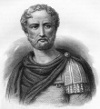

Vezüv Yanardağı, 79 yılının 24 Ağustosu’nda taş ve kül fışkırtmaya başladığında çevre yerleşimlerde yaşayanlar güvenli bölgelere kaçmak zorunda kaldılar. Garip bir şekilde bir adam aksi yöne gidiyordu. Yazar Yaşlı Pliny (23-79) kaçmak yerine felaketin yaşandığı yere giderek, olan bitene yakından bakmak istemişti.
Yüksek rütbeli bir Roma askeri olan Pliny, 37 ciltlik ünlü ansiklopedik eseri Historia Naturalis’i iki yıl önce yazmıştı. Şarap yapımından madenciliğe, tıptan coğrafyaya pek çok alanla ilgili bilgiler bulunan bu kitap, neredeyse antik dünyada bilinen her şeyi içermekteydi. Ne var ki kitapta volkanlarla ilgili bir bölüm yoktu. Tam da bu nedenle büyük patlama Pliny’nin merakını cezbetmişti.

Tam adı Gaius Plinius Secundus olan Pliny, asiller sınıfının bir üyesi olarak dünyaya geldi. Alman kabileleri ve Britonlara karşı verilen savaşlar sırasında Roma lejyonlarında yer aldı. Roma’ya döndükten sonra bugün kaybolmuş olan bir savaş tarihi yazdı.
İmparator Vespasian’ın (9-79) temsilcisi olarak seçildi. Doyumsuz bir merakla günümüz Fransa ve İspanya’sının bulunduğu coğrafyayı dolaştı. Ziyaret ettiği her yerde, şaraphanelerde, altın madenlerinde, dağlarda notlar aldı. Pliny 70 yılından ölene kadar ansiklopedisini yazmak için uğraştı. 77 yılında biten ansiklopedi İmparatora adanmıştı. Yüzyıllar boyunca standart bir başvuru kaynağı olacaktı. Minnettar kalan Vespasian, Pliny’i Roma ticaret filosunun başına geçirdi. Bu göreve geldiği gün korkunç bir yanardağ patlaması oldu.
Volkan patlamaya devam ettiği sırada, Pliny Napoli Körfezi’nde ilerliyordu. Kraterin üzerindeki dumanların oluşturduğu mantarı gözlemlemeyi ve belki de hayatta kalanları Pompei’den kurtarmayı umuyordu. Şehir on sekiz saat süren patlamalar sırasında gökten düşen kül ve taşlarla harap olmuştu.
Karaya ayak bastıktan sonra Pliny’nin mürettebatı taşlardan, korlardan ve volkandan fışkıran sülfür gazından öldüler. O ise ertesi gün, dumandan zehirlenerek ya da kalp krizinden öldü.
Ek Bilgiler
1- 79 yılında Vezüv’de yaşanan volkanik patlama tipi, Vezüv’ün en meşhur kurbanının onuruna “Philian patlama” olarak anılmaktadır. Bu tip patlamalarda dumanlar volkandan büyük bir sütun halinde yükselir.
2- Pliny’nin yeğeni Gaius Plinius Caecilius Secundus (61-113) da ünlü bir yazar ve devlet adamıydı. Genellikle amcasıyla karıştırılmaması için “Genç Pliny” olarak anılmaktadır.
3- Ansiklopedide bitki ve hayvanlardan yararlanılan binlerce tedavi yöntemi yer almaktadır. Örneğin Pliny, yeni öldürümüş keçi derisinin yılan ısırığının tedavisinde kullanılabileceğini yazıyordu.